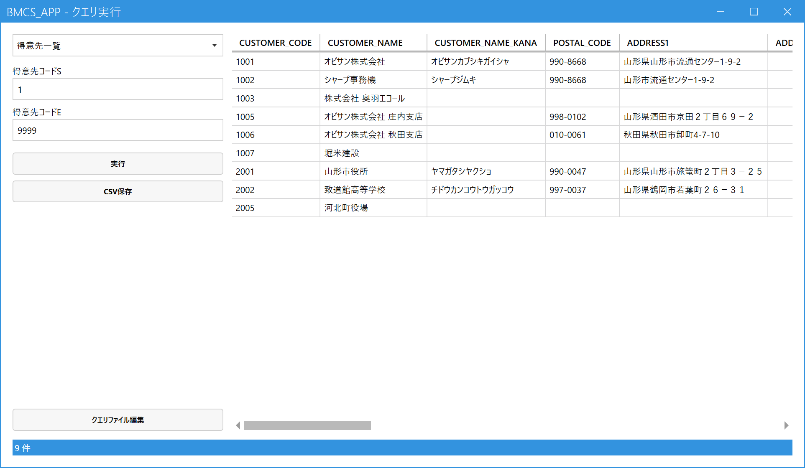

クエリを実行する（管理者）
こんなときに使います
マスタの一覧など、あらかじめ用意した検索（クエリ）の結果を画面に表示し、CSVファイルに保存します。
標準の画面にない一覧が必要なときに、Excelなどへ取り出すために使います。
マスタの一覧など、あらかじめ用意した検索（クエリ）の結果を画面に表示し、CSVファイルに保存します。
標準の画面にない一覧が必要なときに、Excelなどへ取り出すために使います。
管理者専用の画面です。権限レベル9の社員にだけメニューに表示されます。クエリは、システムのデータベースにそのまま問い合わせるため、クエリの内容を書き換えられるのは、SQLのわかる管理者に限ってください。
1.クエリを選んで実行する
メインメニューの「マスタ管理」の中の「Generic Query」を開きます。

- クエリの選択：実行したいクエリを選びます。
- 条件：クエリによって入力欄が変わります（この例は得意先コードの範囲）。前回実行したときの値が、次回の初期値になります。
- 実行：結果を右の一覧に表示します。件数は画面下に出ます。
- 結果：件数に上限なく表示されます。横に長いときは下のスクロールバーで動かします。
- CSV保存：表示中の結果を、見出し付きのCSVファイル（Excelで開ける形式）に保存します。
- クエリファイル編集：クエリの定義ファイルをメモ帳で開きます。メモ帳を閉じると、内容が読み直されます。
2.クエリを追加・変更する
クエリは、使っているパソコンの、システムのフォルダにあるクエリ定義ファイルに書きます（ファイルがなければ、見本つきで自動的に作られます）。画面の「クエリファイル編集」から開いて、追加・変更します。
- クエリごとに、名前・SQL（検索の文）・条件の入力欄を書きます。
- SQLの中の
#param○○という印は、画面の条件に入れた値に置き換わります（文字列の条件は、値に引用符を含めて入力します）。 - この定義ファイルは、パソコンごとに別々です。ほかのパソコンで同じクエリを使いたいときは、ファイルをコピーします。システムを入れ替えるときは、上書きされないよう注意してください。